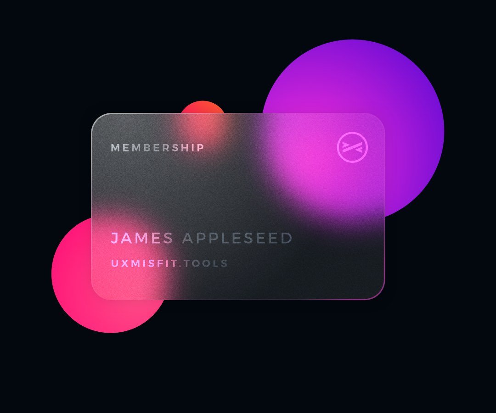

Temporary Glassmorphism Page
Glassmorphism is a design trend that became popular around 2020, created by layering a semi-transparent/transluscent box with some
background blur either on top of an image, or on top of a gradient or colorful background, which can be exaggerated by letting the box move
around on top of said background to induce an even greater effect
Recently, however, Apple introduced Liquid Glass, a type of "material" that warps the elements behind the box on the border of the box, which is very cumbersome to replicate on the web, and is also not as good and very rescource intensive, so I am not really bothering to even put an example of it here.
(this is used for the navbar btw)
Recently, however, Apple introduced Liquid Glass, a type of "material" that warps the elements behind the box on the border of the box, which is very cumbersome to replicate on the web, and is also not as good and very rescource intensive, so I am not really bothering to even put an example of it here.
(this is used for the navbar btw)
By me with the mobile view on my personal project website


By Apple

By Thalion on UXMisfit.com